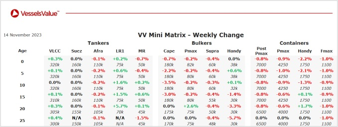

inWeekly Vessel Valuations Report14/11/2023

Bulkers: Older Capesize and Handy BCs softened owing to sales
Capesize BC Frontier Brilliance (181,400 DWT, Dec 2013, Imabari) sold to unknown Chinese buyers for USD 30.6, VV Value USD 33.5 mil
Capesize BC Xin Bin Hai (180,300 DWT, Mar 2010, Dalian) sold to unknown Greek buyers for USD 21.5 mil, VV Value USD 22.32 mil
Panamax BC Peace Pearl (76,400 DWT, Jul 2013, Zhejiang Zhenghe) sold to unknown Greek buyers for USD 15.6 mil (Inc TC), VV Value USD 14.62 mil
Supramax BC Nippon Maru (55,600 DWT, May 2011, Mitsui Tamano) sold to unknown Greek buyers for USD 17.30 mil, VV Value USD 16.34 mil
Handy BC Lake Dany (28,400 DWT, Feb 2008, Shimanami) sold to unknown Greek buyers for USD 8.5 mil, VV Value USD 9.5 mil
Tankers: Older LR1 tonnage continued to increase last week
8x LR2s (119,500 DWT, 2010-2012, Hyundai Samho HI) sold to Torm in an en bloc deal for USD 399 mil (Cash/Share), VV Value USD 401 mil
MR2 (Chem/Product) Falcon Sextant (51,000 DWT, Sep 2009, STX Offshore) sold to undisclosed buyers for USD 24.50 mil, VV Value USD 25.57 mil
Small Chemical Monax & Marmotas (20,800 DWT, Feb-Jul 2005, Usuki Zosensho) sold to Stainless Tankers ASA in an en bloc deal for USD 27 mil (DD Passed), VV Value USD 28 mil
Containers: Second-hand values continued to soften as buyers continued to wait and see anticipating further decreases. 10YO Values depreciated c.0.8% on average considering all subtypes
No notable sales last week
